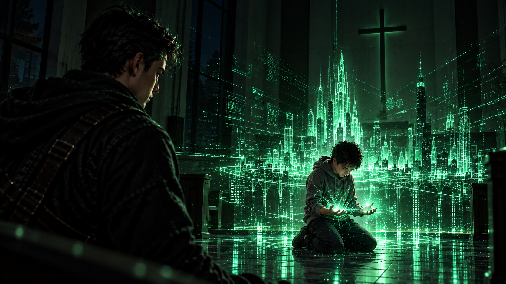
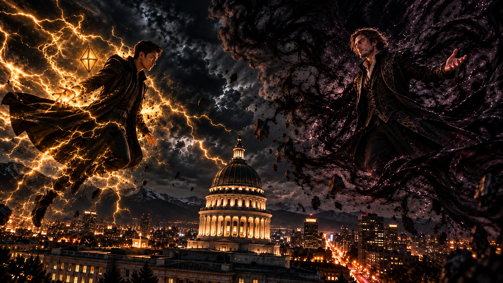

WHITE MAGIC ART STUDIO
第十七章
記憶的深處
寇德薩拉．記憶迴廊
翡翠綠色的數據長槍貫穿了少年克里斯的身體。
那道幻影猛然停住。
原本在他周圍肆虐的藍白色雷電瞬間失去控制，化作細碎的電光，沿著牆面迅速消散。
下一秒，少年的身影開始崩解。
從指尖、手臂，到胸膛與臉龐，無數藍白色光點自他的身體剝落，最後徹底消失在空氣之中。
走廊重新陷入寂靜。
柴克仍縮在桌邊，雙手擋在身前。
他甚至忘了放下手臂。
直到一陣熟悉的腳步聲傳來。
柴克才緩緩抬起頭。
真正的克里斯站在不遠處。
他身上的深色外套隨著腳步輕輕晃動，右手仍維持著投擲長槍後的姿勢。
那支翡翠綠色的數據長槍，正從槍尖開始逐漸瓦解。
一行行閃爍的程式碼分離、崩解，最後消失在空氣裡。
「哥……？」
克里斯沒有回答。
他只是走到弟弟面前，向他伸出手。
柴克看著那隻手，又抬頭望向哥哥。
「剛才那個……」
克里斯的眼神微微閃動。
柴克抓住他的手，被他一把從地上拉了起來。
「那是你小時候，對吧？」
「別想太多。」
克里斯撇開視線，語氣平淡得彷彿剛才什麼都沒有發生。
「小時候的聖術師，本來就比較難控制力量。那時候的我偶爾會失控。」
柴克沒有鬆開他的手。
「可是……」
他遲疑了一下。
「那個眼神，不像只是失控。」
克里斯沉默了。
柴克盯著哥哥。
「你真的曾經因為我是雷翼……很在意嗎？」
「都說了。」
克里斯伸出手指，在柴克額頭上敲了一下。
「年紀小，一時控制不好而已。」
「痛！」
柴克立刻摀住額頭。
「你幹嘛啦！」
「確認你還有沒有力氣問廢話。」
柴克皺著臉，正準備反駁，克里斯卻已經轉開視線。
「倒是你。」
他停頓片刻。
「迦勒的事……果然對你影響很大。」
柴克臉上的表情瞬間凝住。
「你怎麼突然提他？」
克里斯沒有立刻回答。
「我跟安娜，剛才進入了你的記憶。」
柴克一怔。
「什麼？」
「我們看見了。」
克里斯的聲音低了下來。
「那座工地。」
「還有迦勒。」
老屋裡安靜了幾秒。
柴克緩緩垂下眼睛。
那些早已被他埋藏在記憶深處的畫面，再次浮現。
色彩斑斕的風箏。
尚未完工的建築。
還有那道他再熟悉不過的聲音。
『柴克！』
他彷彿又聽見了那個男孩的呼喊。
「原來……」
柴克低聲說道。
「迦勒就是我最害怕的記憶。」
克里斯看著弟弟。
他原本想說些什麼，最後卻只是輕聲開口：
「我很遺憾。」
柴克搖了搖頭。
「都過去了。」
他勉強擠出一點笑容，隨即像突然想到什麼。
「等一下，安娜呢？」
柴克猛然抬頭。
「你不是說你跟她一起？」
「我們一起穿過出口。」
克里斯環顧四周。
「但進來之後，就分開了。」
柴克望著這棟熟悉又陌生的老房子。
「所以這個試煉到底要我們幹嘛？」
「把我們的記憶交錯在一起，形成一座迷宮。」
克里斯推測。
「如果傑西的翻譯沒有問題，只要找到真正的出口，我們應該就能離開。」
「『應該』？」
「不然你有更好的答案？」
柴克想了一秒。
「沒有。」
「那就找。」
兩人決定分頭搜尋。
克里斯沿著木製樓梯走上二樓。
這裡的一切都熟悉得令人不舒服。
扶手上的刮痕。
牆面曾經被安娜畫花、後來又重新粉刷過的位置。
甚至連木板被踩踏時發出的聲音，都與他的記憶一模一樣。
他推開走廊上的第一扇門。
門後是一堵牆。
第二扇。
仍然是一堵牆。
第三扇門後，則是一片深不見底的黑暗。
「到底要找什麼……」
克里斯皺起眉頭，正準備離開。
就在這時，窗外忽然傳來一道聲音。
「我很遺憾……」
克里斯停下腳步。
那句話，他才剛對柴克說過。
可這一次，聲音卻來自窗戶另一側。
他慢慢走近。
窗外不再是熟悉的街道。
而是一座教堂。
教堂門前站著幾個人。
雷穿著黑色正式西裝，神情疲憊而沉重。
瑞秋挺著肚子，牽著年僅兩歲的柴克。
一旁，還站著五歲的自己。
克里斯的呼吸微微一滯。
他認出了那一天。
詹姆斯的告別式。
喪禮剛剛結束，一家人正站在教堂門口，向前來弔唁的親朋好友道別。
人群中，低聲交談此起彼落。
「真可憐，這麼小就失去父親……」
「最可憐的還是柴克。」
另一人壓低聲音。
「你沒聽說嗎？那孩子是『預言之子』……」
「怎麼會發生這種事……上週才看見詹姆斯帶著克里斯去放風箏。」
「以後可得多鼓勵克里斯。」
「他是哥哥，總有一天得成為弟弟的幫助。」
那些話語混雜在人群之中。
有些人是聖術師，有些人則只是普通的親友。
他們或許沒有惡意。
甚至自認是在安慰這個剛失去親人的家庭。
然而，沒有人注意到——
五歲的克里斯，就站在旁邊。
那些話，他全都聽見了。
窗外的畫面沒有聲音地停頓了一瞬。
現在的克里斯望著年幼的自己。
那個孩子沒有哭。
也沒有反駁。
只是站在原地，緊緊握著自己的雙手。
克里斯緩緩移開目光。
他不想再看下去。
然而，才走出幾步，另一扇窗戶又傳來熟悉的聲音。
「很好，克里斯。」
那是——
傑西。
克里斯停下腳步。
他慢慢走向窗邊。
窗戶另一側，已經不再是教堂。
而是一間熟悉的訓練室。
十三歲的自己站在中央。
汗水浸濕了額前的頭髮。
銀藍色雷電纏繞著他的雙臂，隨著呼吸微微閃動。
傑西站在不遠處。
「保持這個狀態。」
年輕一些的傑西臉上帶著明顯的欣慰。
「很少有人在你這個年紀，就能把雷之力控制到這種程度。」
少年克里斯喘著氣，卻沒有放鬆。
傑西繼續說道：
「照這個速度下去，等你覺醒屬於自己的聖術師類型後——」
「就能保護柴克。」
少年突然接了下去。
傑西愣住。
「什麼？」
少年克里斯低著頭。
掌中的雷光仍在閃爍。
「你想說這個，對吧？」
「克里斯，我不是——」
「我這麼努力變強，就是為了保護他，對吧？」
銀藍色的電流開始變得不穩定。
「我不能為了我自己嗎？」
少年抬起頭。
「不能為了爸爸嗎？」
他的聲音逐漸提高。
「一定要為了柴克嗎？」
傑西一時沒有說話。
「我只是希望你——」
「夠了。」
少年克里斯散去掌中的雷光。
「我累了。」
他轉過身。
「今天到這裡就好。」
沒有等傑西回答，便直接離開了訓練室。
站在窗前的克里斯沒有動。
這些話，他已經很多年沒有想起來了。
或者更準確地說——
他一直知道自己說過。
只是不願意再記起，當時究竟懷著什麼樣的心情。
窗外的畫面逐漸淡去。
最後，只剩下一片漆黑。
克里斯緩緩轉身。
走向走廊深處。
就在這時，前方一扇原本緊閉的房門，忽然自行打開。
這一次，他甚至還沒走進去，就已經知道門後是哪裡。
自己的臥室。
十三歲的自己站在床邊。
床上，坐著十歲的柴克。
「迦勒……」
小柴克低著頭。
肩膀不停顫抖。
「迦勒……」
少年克里斯站在他身後。
沒有安慰。
沒有靠近。
只是靜靜看著。
他的雙手垂在身側。
一縷銀藍色的雷電，正從指縫間緩緩浮現。
現在的克里斯臉色瞬間變了。
「不……」
他往前一步。
「不要。」
然而，記憶中的少年聽不見。
那雙眼睛裡，正浮現出剛才柴克所見過的情緒。
嫉妒。
憤怒。
以及壓抑了太久、幾乎失去控制的黑暗。
少年克里斯慢慢抬起手。
銀藍色的雷光映亮他的側臉。
現在的克里斯只能站在一旁。
他知道接下來會發生什麼。
就在這時——
十歲的柴克突然站起身。
少年克里斯一怔。
下一秒，小柴克直接撲進他的懷裡。
「哥……」
少年整個人僵住。
「哥……」
柴克緊緊抓住他的衣服。
壓抑了不知多久的哭聲，終於徹底失控。
「迦勒他……」
少年克里斯低下頭。
掌中的雷光仍然亮著。
「我叫他好多次……」
「可是他都沒有回答我……」
「哥……」
小柴克哭得幾乎說不出完整的話。
「我好害怕……」
少年克里斯怔怔望著懷裡的弟弟。
雷光，熄滅了。
他的手停在半空中。
眼前沒有雷翼。
沒有「預言之子」。
也沒有所有人口中那個「你必須保護的人」。
只有他的弟弟。
一個十歲的孩子。
正緊緊抓著他。
因為在這個時候，他已經不知道還能抓住誰。
少年克里斯的手開始顫抖。
他緩緩將手放在弟弟背上。
柴克哭得更厲害了。
少年沒有說話。
只是任由弟弟抱著。
直到他的視線落在自己剛才亮起雷光的那隻手上。
他的臉色突然變了。
彷彿直到這一刻，才真正看清楚自己方才差點做出的事。
「……」
少年猛然推開柴克。
小柴克錯愕地抬起頭。
「哥？」
少年沒有回答。
眼淚卻先掉了下來。
「哥？」
他轉身衝出房間。
「克里斯！」
柴克在後面喊。
少年沒有回頭。
現在的克里斯站在原地。
也沒有追上去。
因為他知道，接下來的自己會去哪裡。
記憶再次變化。
臥室的牆壁逐漸褪去。
空間向四面八方延伸。
一排排長椅自黑暗中浮現。
最後，化作一座安靜的教堂。
十三歲的克里斯跪在前方。
整座教堂寂靜無聲。
只有少年壓抑不住的哭聲。
「拉比……」
他低頭，緊緊交握雙手。
「求祢原諒我……」
聲音顫抖得幾乎聽不清楚。
「我竟然……想殺了自己的弟弟。」
眼淚落在交握的手背上。
「求祢收回我的聖術……」
少年沉默了很久。
直到哭聲逐漸平息。
「但是……」
他緩緩抬起頭。
「如果祢還願意給我一次機會……」
「求祢賜給我足以打造一個能保護家人的世界的力量。」
教堂再次陷入寂靜。
滋——
一道微弱的綠光，在少年掌心亮起。
克里斯怔住了。
那不是他熟悉的銀藍色雷電。
而是一道道細小的翡翠綠色光線，逐漸分裂、排列，化作無數閃爍的程式碼。
它們從少年掌中升起，向四面八方延伸。
街道。
橋梁。
建築。
一座由翡翠綠色雷光構成的城市，慢慢在教堂裡展開。
少年克里斯望著眼前的景象，久久沒有動作。
站在記憶之外的克里斯，也只是靜靜看著。
他記得這一天。
這是《雷之演算法》第一次出現的時刻。
也是他得知自己成為元素使的那一天。

多年後再次看見，克里斯仍不禁紅了眼眶。
原來，自己曾經如此迫切地希望改變。
也曾經如此真誠地相信——
未來可以和過去不同。
「克里斯！」
柴克的聲音忽然從遠處傳來。
「我找到出口了！」
教堂開始消失。
十三歲的自己。
那座綠色城市。
一切重新化作光點。
克里斯迅速轉身。
空間變回原本的房子二樓走廊，
柴克正站在一樓樓梯口，興奮地朝他揮手。
「這裡！」
克里斯走了過去。
柴克指著地板。
那扇熟悉的暗門已經打開。
下方卻不再是詹姆斯的秘密書房，而是一片純白的光芒。
「我剛剛在想。」
柴克蹲在入口旁。
「如果普通的門全部都出不去，那出口會不會根本不是一般的門？」
「然後我就想到爸以前的秘密書房。」
他指了指暗門。
「結果真的在這裡！」
克里斯望著那道光芒。
「不錯嘛。」
「對吧？」
柴克站起身，正準備往下走，卻忽然停住。
他轉頭看向哥哥。
「等一下。」
「幹嘛？」
柴克盯著他的臉。
「你哭了？」
克里斯立刻撇開視線。
「沒有。」
「你眼睛明明——」
「灰塵。」
柴克抬頭看了一眼四周。
「這裡哪來那麼多——」
「走了。」
克里斯直接伸手把他往暗門推。
「欸！等一下！」
柴克連忙抓住門框。
「你不要每次都用暴力結束話題！」
克里斯終於笑了一下。
很淡。
「走吧。」
柴克狐疑地看了他兩秒。
最後還是跳進了白光。
克里斯站在入口前，回頭看了一眼這棟老房子。
十三歲的自己已經不在了。
訓練室。
臥房。
教堂。
也全都消失。
只剩下一片安靜的黑暗。
他緩緩收回視線。
然後跨進出口。
白光吞沒了他。
同一時間．美國猶他州．鹽湖城
客廳裡，電影正播到最熱鬧的片段。
電視傳來誇張的音效，緊接著是一陣歡快的配樂。
沙發前的茶几上擺著一大碗爆米花，幾顆不小心掉落的玉米粒散在地毯上，卻沒有人在意。
「這段太好笑了！」
布萊恩笑得幾乎坐不住，伸手指著電視。
「爸！你有看到那隻狗居然在跳舞嗎？」
「我看到了！」
喬治忍不住笑出聲。
「這也太荒唐了吧！」
他伸手揉亂兒子的頭髮，另一隻手自然地攬著妻子梅格的肩膀。
梅格靠在丈夫身旁，笑著搖了搖頭。
女兒莉亞則蜷縮在毯子裡，懷中抱著爆米花，一邊吃一邊咯咯笑個不停。
這是米勒家再普通不過的週五夜晚。
每到星期五，一家人總會聚在客廳，選一部電影，準備一些零食，一起度過週末開始前的時光。
電影之夜，是他們維持了許多年的家庭傳統。
就在這時，電話鈴聲響了。
喬治看向廚房的方向。
「我去接個電話。」
他站起身，還不忘回頭叮嚀。
「不准趁我不在的時候把結局劇透喔！」
「那你要快一點！」布萊恩笑著回答。
喬治走進廚房，拿起話筒。
「喂？喬治・米勒。」
電話另一端傳來微弱的人聲。
「喬……你……快……」
聲音斷斷續續，像是受到嚴重干擾。
喬治皺起眉頭，將話筒貼近耳邊。
「什麼？抱歉，你說什麼？」
「……快……」
聲音突然中斷。
喬治等了一會兒。
「喂？」
沒有回答。
他又喚了一聲，電話那頭卻始終一片寂靜。
沒有斷線的提示音，也聽不見任何呼吸或背景聲響。
彷彿就在剛才那一瞬間，話筒另一端的整個世界都消失了。
喬治疑惑地看了看電話。
最後，他緩緩將話筒放回原位。
「真奇怪……」
他轉身走出廚房。
「梅格，剛剛有通電話——」
話說到一半，喬治停住了。
客廳裡，沒有人。
沙發上空空蕩蕩。
原本被莉亞抱在懷裡的毯子滑落在地，爆米花灑得到處都是。
電視仍在播放電影。
畫面中的主角正對著鏡頭放聲大笑，歡快的配樂持續響著，與眼前空蕩的客廳形成難以言喻的反差。
喬治怔怔站在原地。
「……梅格？」
沒有回答。
「布萊恩？莉亞？」
他走向沙發，繞到後方看了一眼。
沒有人。
「嘿，別鬧了。」
喬治勉強笑了一下。
「你們躲去哪了？」
他推開通往後院的門。
院子裡空無一人。
喬治又回到客廳，望向樓梯。
「梅格？」
他的聲音開始帶著不安。
「孩子們？」
整棟房子安靜得出奇。
除了電視傳來的笑聲，沒有任何回應。
喬治快步走向樓梯，正準備上樓查看，背後卻忽然傳來一股異樣的寒意。
他停下腳步。
那感覺不像普通的冷風。
更像有什麼東西，正悄悄靠近。
喬治緩緩轉身。
廚房門口，不知何時出現了一縷黑霧。
它沿著牆角緩慢流動，濃稠得幾乎看不見後方的地板。
黑色霧氣不斷伸展、收縮，彷彿擁有自己的意識。
喬治的呼吸停了一瞬。
「……什麼鬼東西？」
黑霧向前蔓延。
喬治後退一步。
下一秒，他猛然轉身，朝玄關衝去。
他抓住門把，用力一轉。
門沒有打開。
「怎麼回事？！」
喬治再次扭動門把，接著用肩膀撞向大門。
門板紋絲不動。
「有人嗎？！」
他用力拍門。
「救命！有沒有人聽見？！」
身後沒有任何腳步聲。
喬治卻清楚感覺到，那股寒意正在逼近。
他回過頭。
黑霧已經覆蓋了半條走廊。
濃重的陰影沿著牆面向上攀附，又從天花板垂落，在地毯上緩緩流動。
原本溫暖明亮的家，正在一點一點被黑暗吞沒。
「不……不可能……」
喬治踉蹌著退開。
他放棄玄關，轉身衝向樓梯旁的儲藏室。
狹小的房間裡堆著清潔用品與幾個舊紙箱。
喬治迅速鑽進去，抓住門把，試圖將門關上。
然而，就在門縫即將合攏時，一縷黑霧突然竄了進來。
它沿著門框迅速滑入。
「不！不要！」
喬治驚慌地揮手，拼命想把那團黑霧擋在外面。
但黑暗已經湧進房間。
下一瞬間——
一切聲音戛然而止。
米勒家的燈仍然亮著。
客廳的電視也沒有停止播放。
電影裡的人們依舊歡笑，歡快的配樂在空蕩的屋內迴盪。
只是，再也沒有人回應。
猶他州議會大廈．圓頂上方
距離米勒家不遠處，猶他州議會大廈靜靜矗立在夜色之中。
魔神站在大廈的圓頂上方，俯瞰著整座鹽湖城。
濃重的黑霧不斷從牠腳下向外擴散，沿著街道、建築與巷弄緩緩蔓延。
原本燈火通明的城市，此刻正逐漸陷入一片死寂。
街道上的車輛停了下來。
行人的聲音消失。
只有少數建築仍亮著燈，微弱的光線在黑霧中忽明忽暗。
魔神望著腳下的城市，嘴角浮現一抹笑意。
牠像是感應到了什麼，忽然微微側過頭。
「放心吧……」
牠輕聲開口。
「他們沒有死。」
黑霧在身後緩緩翻騰。
「上面那位讓我們殺不了人……記得嗎？」
牠的聲音帶著一絲笑意。
「他們只是迷失在黑暗裡而已。」
魔神低頭望向腳下的街道。
「順便提供我一點活力罷了。」
身後，一道人影逐漸從夜色中顯現。
魔神沒有回頭。
「你一定覺得很好笑吧？」
牠望著遠方。
「一路從紐約追著我，最後才發現，我落腳的地方竟然是你的家鄉……喔……嚴格來說……是你哥哥的家鄉？」
牠輕輕笑了。
「繞了一大圈，最後還是回到原點。」
魔神緩緩轉身。
「這種感覺如何啊？」
牠的目光落在來者身上。
「雷・安德烈。」
雷站在圓頂另一側，黑色風衣隨著高處的氣流輕輕翻動。
他緊盯著魔神，沒有回答。
眼前的敵人，仍然使用著詹姆斯的身體。
那張熟悉的臉龐，在黑霧之中顯得格外陌生。
魔神看著他，笑意更深。
「哼……」
牠緩緩抬起一隻手。
黑霧在掌心盤旋，逐漸凝聚成模糊的形狀。
「我在這具身體裡待得越久，就越能看見那些有趣的記憶。」
牠微微歪頭。
「孩子們、過去發生的事……還有你。」
雷的目光沒有移開。
魔神繼續說：
「那些記憶就像一卷卷老舊的錄影帶，自己在腦袋裡播放。」
牠忽然笑了起來。
「我現在總算明白，為什麼我的寶貝們甦醒之後，第一個想去的地方會是鹽城湖那棟破房子。」
雷的神情微微一變。
魔神看見了。
「啊……」
牠故意拖長聲音。
「我還記得牠們在那裡吃的第一餐。」
牠望著雷。
「那個少年……叫查德，對吧？」
魔神低低笑了幾聲。
雷的拳頭緩緩握緊。
細小的金色電流在指尖跳動。
他沒有立刻發作，只是冷冷開口。
「所以呢？」
魔神看向他。
「你都已經吞了半個美國，還特地跑去紐約。」
雷的聲音沒有起伏。
「為什麼又回到這裡？」
他停頓片刻。
「其他國家的人，你沒有興趣嗎？」
魔神沒有立即回答。
牠轉身望向腳下的城市。
黑霧仍在街道間緩緩流動，逐漸吞沒遠方的燈光。
「你知道原因的，雷。」
牠的聲音低沉了幾分。
「我需要一把鑰匙。」
雷的眼神一沉。
「一把能讓我脫離你那位最親愛的哥哥的身體……」
魔神回過頭。
「真正獲得自由的鑰匙。」
雷沒有話說。
但他很清楚，魔神所指的是誰。
柴克。
只要魔神仍需要那個孩子，牠就不會輕易放棄追捕。
而雷必須阻止牠。
至少現在，還不能讓牠找到柴克。
他需要爭取更多時間。
「可惜啊……」
雷終於開口。
魔神望向他。
雷緩緩抬起頭。
「那把鑰匙，現在有個很頑固的叔叔看著。」
金色電流從他的指尖竄出。
雷的身體緩緩升空。
一枚黑色菱形水晶在他身旁浮現。
阿法。
水晶邊緣亮起金光，細密的雷電逐漸向外延伸，在夜空中交織成數道耀眼的電弧。
雷望著魔神。
「我可不會輕易把那孩子交給你。」
魔神看著他。
臉上的笑容沒有絲毫改變。
「你真的覺得……」
牠緩緩升起。
身後的黑霧隨之展開，如同一面巨大的黑色帷幕，逐漸遮住大廈上方的夜空。
「我在意嗎？」
話音剛落，魔神猛然揮手。
黑霧從牠身後奔湧而出，化為數道龐大的暗影，朝雷席捲而去。
雷沒有退開。
阿法驟然亮起。
轟隆！
金色雷電從水晶中爆發，迎面撞上洶湧而來的黑霧。
強烈的光芒瞬間照亮猶他州議會大廈。
雷鳴聲震徹夜空。
黑霧不斷翻騰，金色電流則沿著雲層迅速蔓延，將整片天空映得忽明忽暗。
雷的身影在光芒中疾速升高。
魔神緊隨其後。
兩股截然不同的力量，在鹽湖城上空正面交鋒。
一側是耀眼的金色雷霆。
另一側，是幾乎吞沒天際的黑暗。
而在這座熟悉的城市上方，雷・安德烈終於與佔據著哥哥身體的魔神，展開了正面對決。
